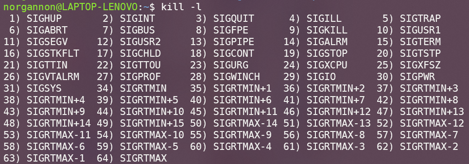

一、信号简介
（1）信号含义
软中断信号(signal，又简称为信号)用来通知进程发生了异步事件。在软件层次上是对中断机制的一种模拟；在原理上，一个进程收到一个信号与处理器收到一个中断请求可以说是一样的。信号是进程间通信机制中唯一的异步通信机制，一个进程不必通过任何操作来等待信号的到达，事实上，进程也不知道信号到底什么时候到达。进程之间可以互相通过系统调用 kill 发送软中断信号。内核也可以因为内部事件而给进程发送信号，通知进程发生了某个事件。信号机制除了基本通知功能外，还可以传递附加信息。
（2）信号分类
可以使用kill -l命令查看当前系统支持的所有信号：

信号值小于 SIGRTMIN（<=34）的信号都是不可靠信号。它的主要问题是信号可能丢失。 信号值位于 SIGRTMIN 和 SIGRTMAX 之间的信号都是可靠信号，这些信号支持排队，不会丢失。
（3）信号的产生
信号可以由一下几种方式产生：
- 键盘事件：ctrl+c ctrl+\ ctrl+Z 等
- 非法内存：如果内存管理出错，系统就会发送一个信号进行处理
- 硬件检测到异常：如段错误，除 0，总线错误等
- 环境切换：比如说从用户态切换到其他态，状态的改变也会发送一个信号，这个信号会告知给系统
- 系统调用：如调用
kill，raise，sigsend，sigqueue函数等
（4）信号处理
进程可以通过三种方式响应信号：
- 接受默认处理
- 忽略信号（某些信号不能被忽略，如 SIGKILL 和 SIGSTOP）
- 捕捉信号并执行信号处理程序
二、信号操作
（1）信号发送
系统调用中用于发送信号的函数有 kill() raise() abort() 等。
kill() 函数
#include <signal.h>
int kill(pid_t pid, int sig);
//第一个参数pid代表接受信号的进程PID，第二个参数代表要发送的信号
参数 pid 会影响 kill()函数的作用，取值分为以下四种情况
- 若 pid>0，则发送信号 sig 给进程号为 pid 的进程。
- 若 pid=0，则发送信号 sig 给当前进程所属进程组的所有进程。
- 若 pid=-1，则发送信号 sig 给除 1 号进程和当前进程外的所有进程。
- 若 pid<-1，则发送信号 sig 给属于进程组 pid 的所有进程。
segqueue() 函数
sigqueue()函数支持发送信号的同时传递参数，需要配合 sigaction() 函数一起使用。
#include <signal.h>
int sigqueue(pid_t pid, int sig, const union sigval value);
//第一个参数pid代表接受信号的进程PID，第二个参数代表要发送的信号，第三个参数于指定传递的数据
参数 value 用于指定伴随信号传递的数据，为 sigval 联合体，该联合体的定义如下：
union sigval {
int sival_int;
void *sival_ptr;
};
如下的代码使用
segqueue函数实现了数据的进程间传输
./B & # 此时，输出进程 B 的 PID 号。
./A processB_PID 123456 # 第一个参数表示进程 B 的 PID，第二个参数为要传输的（数字）
//code of A
#include <stdlib.h>
#include <stdio.h>
#include <string.h>
#include <signal.h>
#include <unistd.h>
int main(int argc, char *argv[])
{
pid_t pid = atoi(argv[1]);
int stuID = atoi(argv[2]);
union sigval v;
v.sival_int = stuID;
sigqueue(pid, SIGINT, v);
return 0;
}
//code of B
#include <string.h>
#include <signal.h>
#include <unistd.h>
#include <stdlib.h>
#include <stdio.h>
void handler(int, siginfo_t *, void*);
int main(int argc, char *argv[])
{
struct sigaction act;
act.sa_sigaction = handler;
sigemptyset(&act.sa_mask);
act.sa_flags = SA_SIGINFO;
sigaction(SIGINT, &act, NULL);
for(; ;)
pause();
return 0;
}
void handler(int sig, siginfo_t *info, void *ctx)
{
printf("num received:%d\n", info->si_value.sival_int);
}
（2）信号捕捉
若进程捕捉某信号后，想要让其执行非默认的处理函数，则需要为该信号注册信号处理函数。进程的信号是在内核态下处理的，内核为每个进程准备了一个信号向量表，其中记录了每个信号所对应的信号处理函数。Linux 系统为用户提供了两个捕捉信号的函数，即 signal() 和 sigaction() 两个函数。
#include <signal.h>
typedef void (*sighandler_t)(int);
sighandler_t signal(int signum,sighandler_t handler);
//第一个参数表示信号编号，第二个参数一般表示信号处理函数的函数指针，除此之外还可以为SIG_IGN和SIG_DEL
#include <signal.h>
int sigaction(int signum,const struct sigaction* act,const struct sigaction* oldact);
//第一个参数表示信号编号，第二个为传入参数，包含自定义处理函数和其他信息，第三个参数为传出参数，包含旧处理函数等信息
如下的代码通过信号实现了异步回收子进程。避免了
wait()函数回收子进程时对父进程的阻塞。
#include <stdio.h>
#include <unistd.h>
#include <signal.h>
#include <sys/wait.h>
#include <stdlib.h>
void collect(int sig);
int main()
{
signal(SIGCHLD, collect);
pid_t pid;
for (int i = 1; i <= 5; i++)
{
pid = fork();
if (pid == 0) // child
{
printf("child pid:%d\n", getpid());
fflush(stdout);
exit(i);
}
}
// 模拟父进程继续执行
int time = 10;
while ((time = sleep(time)) != 0);
}
void collect(int sig)
{
signal(SIGCHLD, collect);
int status;
pid_t pid;
while ((pid = waitpid(-1, &status, WNOHANG)) > 0)
{
printf("child collected, pid:%d, status:%d\n",
pid, WEXITSTATUS(status));
fflush(stdout);
}
}
（3）信号屏蔽
信号屏蔽机制是用于解决常规信号不可靠这一问题。在进程的 PCB 中存在两个信号集，分别为信号掩码和未决信号集。两个信号集实质上都是位图，其中每一位对应一个信号，若信号掩码某一位为 1，则其对应的信号会被屏蔽，进入阻塞状态，此时内核会修改未决信号集中该信号对应的位为 1，表示信号处于未决状态，之后除非信号被解除屏蔽，否则内核不会再向该进程发送该信号。
信号集设定函数：
-
sigemptyset()——将指定信号集清 0 -
sigfillset()——将指定信号集置 1 -
sigaddset()——将某信号加入指定信号集 -
sigdelset()——将某信号从信号集中删除 -
sigismember()——判断某信号是否已被加入指定信号集
信号集函数：
#include <signal.h>
int sigprocmask(int how,const sigset_t* set,sigset_t* oldset);
//第一个参数用于设置位操作方式，第二个参数一般为用户指定信号集，第三个参数用于保存原信号集
//how=SIG_BLOCK：mask=mask|set
//how=SIG_UNBLOCK：mask=mask&~set
//how=SIG_SETMASK：mask=set
如下的代码展示了信号遮蔽的使用方式。通过阻塞所有信号，避免了 printf() 函数因使用全局缓冲区而产生的异步信号不安全问题。
void print_safe()
{
sigset_t set;
// 1~64 为所有信号的编号
for (int i = 1; i <= 64; i++)
sigaddset(&set, i);
// 阻塞所有信号
sigprocmask(SIG_BLOCK, &set, NULL);
printf("safe print!\n");
// 恢复所有信号
sigprocmask(SIG_UNBLOCK, &set, NULL);
}
（4）定时信号
Linux 下的 alarm() 函数可以用来设置闹钟，该函数的原型为：
#include<unistd.h>
unsigned int alarm(unsigned int seconds);
//第一个参数seconds用来指明时间，经过seconds秒后发送SIGALRM信号给当前进程，当参数为0则取消之前的闹钟
返回值：
- 如果本次调用前已有正在运行的闹钟，alarm()函数返回前一个闹钟的剩余秒数
- 如果本次调用前无正在运行的闹钟，alarm()函数返回 0
Linux 系统中 sleep()函数内部使用 nanosleep()函数实现，该函数与信号无关；而其他系统中可能使用 alarm()和 pause()函数实现，此时不应该混用 alarm()和 sleep()。
如下的代码实现了这样的功能：程序每间隔 1 秒输出信息，当按下 ctrl+c 后，程序询问是否退出程序（此时停止输出学号），输入 Y 或 5 秒未进行任何输入则退出程序，输入 N 程序恢复运行，继续输出信息
#include <stdio.h>
#include <signal.h>
#include <unistd.h>
#include <stdlib.h>
void chooseIfExit(int signal);
void doExit(int signal);
int main()
{
signal(SIGINT, chooseIfExit);
while(1)
{
printf("21371326\n");
sleep(1);
}
return 0;
}
void chooseIfExit(int sig)
{
signal(SIGINT, chooseIfExit);
signal(SIGALRM, doExit);
alarm(5);
printf("want to exit? (Y/N)\n");
char choose;
scanf(" %c", &choose);
if (choose == 'N')
{
alarm(0);
}
else
{
doExit(SIGINT);
}
}
void doExit(int signal)
{
printf("exit...\n");
exit(0);
}
（5）计时器
Linux 下的 setitimer() 和 getitimer() 系统调用可以用于访问和设置计时器，计时器在初次经过设定的时间后发出信号，也可以设置为每间隔相同的时间发出信号，该函数的原型为：
#include <sys/time.h>
int getitimer(int which, struct itimerval *curr_value);
int setitimer(int which, const struct itimerval *restrict new_value,
struct itimerval *restrict old_value);
通过指定 which 参数，可以设置不同的计时器，不同的计时器触发后也会发出不同的信号，一个进程同时只能有一种计时器：
- ITIMER_REAL：真实计时器，计算程序运行的真实时间（墙钟时间），产生 SIGALRM 信号
- ITIMER_VIRTUAL：虚拟计时器，计算当前进程处于用户态的 cpu 时间，产生 SIGVTALRM 信号
- ITIMER_PROF：使用计时器，计算当前进程处于用户态和内核态的 cpu 时间，产生 SIGPROF 信号
计时器的值有以下结构体定义：
struct itimerval {
struct timeval it_interval; //定期触发的间隔
struct timeval it_value; //初次触发时间
};
struct timeval {
time_t tv_sec; //秒
suseconds_t tv_usec; //微秒
};
若 new_value.it_value 的两个字段不全为 0，则定时器初次将会在设定的时间后触发；若 new_value.it_value 的两个字段全为 0，则计时器不工作。
若 new_value.it_interval 的两个字段不全为 0，则定时器将会在初次触发后按设定的时间间隔触发；若 new_value.it_interval 的两个字段全为 0，则计时器仅初次触发一次。
setitimer()函数和 alarm()函数共享同一个计时器，因此不应同时使用。